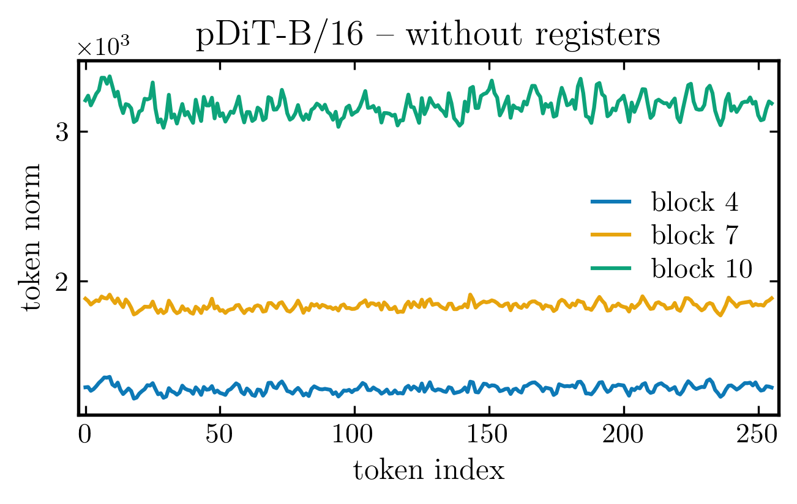
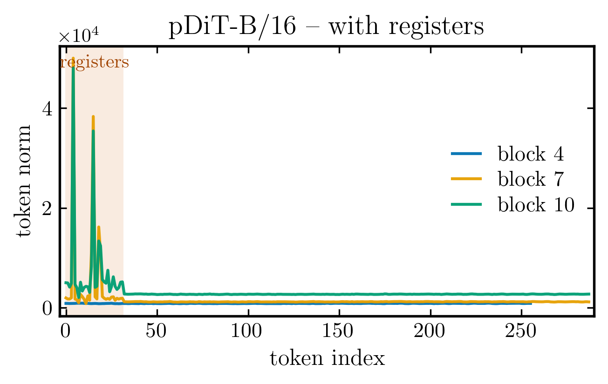
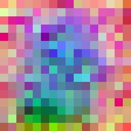
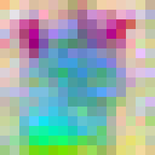

Registers make intermediate features cleaner
We saw that pixel-space DiTs have no patch-token outliers, yet registers still help. What do they change?
Adding register tokens makes high-norm outliers appear, but they emerge within the register tokens themselves, while the patch tokens stay clean. Below, pDiT-B/16 without registers has uniform token norms. With registers, the first 32 (register) tokens spike, leaving the patches uniform.


And this matters: register tokens make the intermediate feature maps cleaner at high noise. Below, PCA of the patch features for pDiT-B/16: with registers the map is far less noisy than without. Drag the sliders to step through blocks and noise levels.


